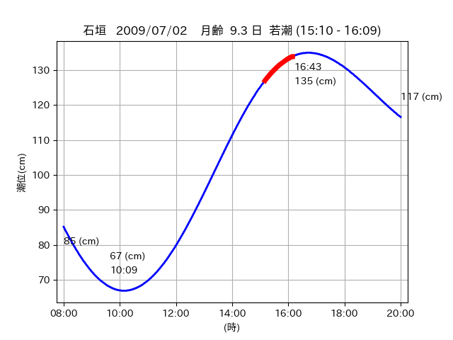

<!DOCTYPE html>
<html>
<head>
    
    <meta http-equiv="content-type" content="text/html; charset=UTF-8" />
    
        <script>
            L_NO_TOUCH = false;
            L_DISABLE_3D = false;
        </script>
    
    <style>html, body {width: 100%;height: 100%;margin: 0;padding: 0;}</style>
    <style>#map {position:absolute;top:0;bottom:0;right:0;left:0;}</style>
    <script src="https://cdn.jsdelivr.net/npm/leaflet@1.9.3/dist/leaflet.js"></script>
    <script src="https://code.jquery.com/jquery-3.7.1.min.js"></script>
    <script src="https://cdn.jsdelivr.net/npm/bootstrap@5.2.2/dist/js/bootstrap.bundle.min.js"></script>
    <script src="https://cdnjs.cloudflare.com/ajax/libs/Leaflet.awesome-markers/2.0.2/leaflet.awesome-markers.js"></script>
    <link rel="stylesheet" href="https://cdn.jsdelivr.net/npm/leaflet@1.9.3/dist/leaflet.css"/>
    <link rel="stylesheet" href="https://cdn.jsdelivr.net/npm/bootstrap@5.2.2/dist/css/bootstrap.min.css"/>
    <link rel="stylesheet" href="https://netdna.bootstrapcdn.com/bootstrap/3.0.0/css/bootstrap-glyphicons.css"/>
    <link rel="stylesheet" href="https://cdn.jsdelivr.net/npm/@fortawesome/fontawesome-free@6.2.0/css/all.min.css"/>
    <link rel="stylesheet" href="https://cdnjs.cloudflare.com/ajax/libs/Leaflet.awesome-markers/2.0.2/leaflet.awesome-markers.css"/>
    <link rel="stylesheet" href="https://cdn.jsdelivr.net/gh/python-visualization/folium/folium/templates/leaflet.awesome.rotate.min.css"/>
    
            <meta name="viewport" content="width=device-width,
                initial-scale=1.0, maximum-scale=1.0, user-scalable=no" />
            <style>
                #map_7593670eee5a1abc321176aa09b5b8c1 {
                    position: relative;
                    width: 2048.0px;
                    height: 1600.0px;
                    left: 0.0%;
                    top: 0.0%;
                }
                .leaflet-container { font-size: 1rem; }
            </style>
        
</head>
<body>
    
    
            <div class="folium-map" id="map_7593670eee5a1abc321176aa09b5b8c1" ></div>
        
</body>
<script>
    
    
            var map_7593670eee5a1abc321176aa09b5b8c1 = L.map(
                "map_7593670eee5a1abc321176aa09b5b8c1",
                {
                    center: [24.48, 123.822],
                    crs: L.CRS.EPSG3857,
                    ...{
  "zoom": 12,
  "zoomControl": true,
  "preferCanvas": false,
}

                }
            );

            

        
    
            var tile_layer_d675db85ca2e571af8766b32c7a9cddd = L.tileLayer(
                "https://cyberjapandata.gsi.go.jp/xyz/seamlessphoto/{z}/{x}/{y}.jpg",
                {
  "minZoom": 0,
  "maxZoom": 18,
  "maxNativeZoom": 18,
  "noWrap": false,
  "attribution": "\u5730\u7406\u9662\u5730\u56f3",
  "subdomains": "abc",
  "detectRetina": false,
  "tms": false,
  "opacity": 1,
}

            );
        
    
            tile_layer_d675db85ca2e571af8766b32c7a9cddd.addTo(map_7593670eee5a1abc321176aa09b5b8c1);
        
    
            var marker_3ca41af01e3684bcfccc312b5d98cc1a = L.marker(
                [24.4439, 123.7867],
                {
}
            ).addTo(map_7593670eee5a1abc321176aa09b5b8c1);
        
    
            var icon_d0243dee822d177cb1d6ff8ba5fddfe6 = L.AwesomeMarkers.icon(
                {
  "markerColor": "orange",
  "iconColor": "white",
  "icon": "info-sign",
  "prefix": "glyphicon",
  "extraClasses": "fa-rotate-0",
}
            );
        
    
        var popup_e34bfa20b6e1541eb82cdd9af043cd8d = L.popup({
  "maxWidth": "100%",
});

        
            
                var html_adf43197dbf03cc14423619e0c01bd13 = $(`<div id="html_adf43197dbf03cc14423619e0c01bd13" style="width: 100.0%; height: 100.0%;"><table><tr><td></td></tr><tr><td><center>20090702 No.1 </center></table></td></tr></table</div>`)[0];
                popup_e34bfa20b6e1541eb82cdd9af043cd8d.setContent(html_adf43197dbf03cc14423619e0c01bd13);
            
        

        marker_3ca41af01e3684bcfccc312b5d98cc1a.bindPopup(popup_e34bfa20b6e1541eb82cdd9af043cd8d)
        ;

        
    
    
                marker_3ca41af01e3684bcfccc312b5d98cc1a.setIcon(icon_d0243dee822d177cb1d6ff8ba5fddfe6);
            
    
            var poly_line_6ecf932919d212cd57157d24460d298c = L.polyline(
                [[24.4439, 123.7867], [24.4425, 123.7801]],
                {"bubblingMouseEvents": true, "color": "#00FFFF", "dashArray": null, "dashOffset": null, "fill": false, "fillColor": "#00FFFF", "fillOpacity": 0.2, "fillRule": "evenodd", "lineCap": "round", "lineJoin": "round", "noClip": false, "opacity": 1.0, "smoothFactor": 1.0, "stroke": true, "weight": 3}
            ).addTo(map_7593670eee5a1abc321176aa09b5b8c1);
        
    
            var marker_4fe50cc15d6fd14b6c196bb51a40ccc2 = L.marker(
                [24.4384, 123.7884],
                {
}
            ).addTo(map_7593670eee5a1abc321176aa09b5b8c1);
        
    
            var icon_4bbff62bc711911ec1b0b661f87f9256 = L.AwesomeMarkers.icon(
                {
  "markerColor": "orange",
  "iconColor": "white",
  "icon": "info-sign",
  "prefix": "glyphicon",
  "extraClasses": "fa-rotate-0",
}
            );
        
    
        var popup_357eb9368a1df0329a9d0976503b4416 = L.popup({
  "maxWidth": "100%",
});

        
            
                var html_cd7a78e95bd433846b028b508ebcaffd = $(`<div id="html_cd7a78e95bd433846b028b508ebcaffd" style="width: 100.0%; height: 100.0%;"><table><tr><td></td></tr><tr><td><center>20090702 No.2 </center></table></td></tr></table</div>`)[0];
                popup_357eb9368a1df0329a9d0976503b4416.setContent(html_cd7a78e95bd433846b028b508ebcaffd);
            
        

        marker_4fe50cc15d6fd14b6c196bb51a40ccc2.bindPopup(popup_357eb9368a1df0329a9d0976503b4416)
        ;

        
    
    
                marker_4fe50cc15d6fd14b6c196bb51a40ccc2.setIcon(icon_4bbff62bc711911ec1b0b661f87f9256);
            
    
            var poly_line_e4880502acd3238555331f1c104e0a24 = L.polyline(
                [[24.4384, 123.7884], [24.4447, 123.7861]],
                {"bubblingMouseEvents": true, "color": "#FF00FF", "dashArray": null, "dashOffset": null, "fill": false, "fillColor": "#FF00FF", "fillOpacity": 0.2, "fillRule": "evenodd", "lineCap": "round", "lineJoin": "round", "noClip": false, "opacity": 1.0, "smoothFactor": 1.0, "stroke": true, "weight": 3}
            ).addTo(map_7593670eee5a1abc321176aa09b5b8c1);
        
    
            var marker_d4855c07c4e53131d51cb566127bd799 = L.marker(
                [24.4801, 123.8216],
                {
}
            ).addTo(map_7593670eee5a1abc321176aa09b5b8c1);
        
    
            var icon_df8aba81774bae28bd38ba259dd4791a = L.AwesomeMarkers.icon(
                {
  "markerColor": "orange",
  "iconColor": "white",
  "icon": "info-sign",
  "prefix": "glyphicon",
  "extraClasses": "fa-rotate-0",
}
            );
        
    
        var popup_383ac092b4ddfe0d779f16e9811c9708 = L.popup({
  "maxWidth": "100%",
});

        
            
                var html_47b65e79bd77fc69860c303f94042c1d = $(`<div id="html_47b65e79bd77fc69860c303f94042c1d" style="width: 100.0%; height: 100.0%;"><table><tr><td></td></tr><tr><td><center>20090702 No.3 </center></table></td></tr></table</div>`)[0];
                popup_383ac092b4ddfe0d779f16e9811c9708.setContent(html_47b65e79bd77fc69860c303f94042c1d);
            
        

        marker_d4855c07c4e53131d51cb566127bd799.bindPopup(popup_383ac092b4ddfe0d779f16e9811c9708)
        ;

        
    
    
                marker_d4855c07c4e53131d51cb566127bd799.setIcon(icon_df8aba81774bae28bd38ba259dd4791a);
            
    
            var poly_line_590a5fdd52799b408e88ef58473a9380 = L.polyline(
                [[24.4801, 123.8216], [24.4806, 123.8223]],
                {"bubblingMouseEvents": true, "color": "#FF00FF", "dashArray": null, "dashOffset": null, "fill": false, "fillColor": "#FF00FF", "fillOpacity": 0.2, "fillRule": "evenodd", "lineCap": "round", "lineJoin": "round", "noClip": false, "opacity": 1.0, "smoothFactor": 1.0, "stroke": true, "weight": 3}
            ).addTo(map_7593670eee5a1abc321176aa09b5b8c1);
        
</script>
</html>